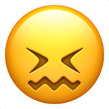
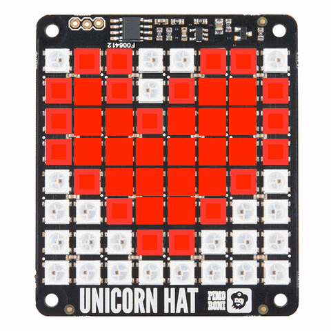
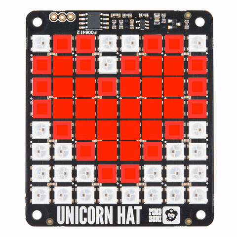
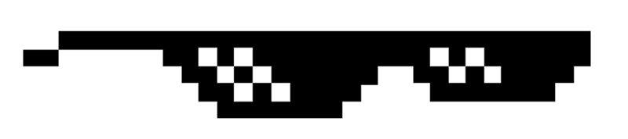
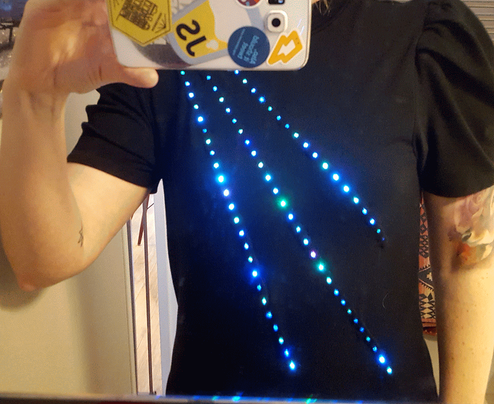

Creating Art
with a Raspberry Pi
Adventures in trying out hardware, code, and having fun in a personal project


Stephanie Nemeth @stephaniecodes
Hi, I'm Stephanie.
Me:

6 months ago
I visited an art museum.
Jean Tinguely
http://www.flickriver.com/photos/46774986@N02/17028829322/
“I wanted something ephemeral that would pass like a falling star...
The work had to just transpire, make people dream and talk, and that would be all.“
- Jean Tinguely
What I dreamed of
What I Built
Phase I: Planning

Project Idea
Research Hardware
Create A Mockup
Identify My Must-Haves
Assembly my Toolkit
Finally, I'm ready to code!

- Coding Skills
- Artistic Ability
- Experience Working With Hardware
- Wiring/Soldering Experience
Reality Check
Could probably handle the coding
Not a real artist
No experience with hardware
No experience with wiring or soldering 

I started googling.
I needed to find a plug and play hardware option.
HATS
Hardware Attached on Top
Easily plugs into a Raspberry Pi's GPIO
No Soldering or Wiring!

HATS
They have established libraries!

Many kinds of HATs


TEXT
LIGHTS
SENSORS
MUSIC
AUDIO
Unicorn HAT
64 LED Lights


I saw Pixel Art

 

Project Idea
Identify Skills Needed
Research Hardware
Identify My Must-Haves
Assembly my Toolkit
Finally, I'm ready to code!
A Mockup of My Idea

Project Idea
Identify Skills Needed
Research Hardware
Create A Mockup
Assembly my Toolkit
Finally, I'm ready to code!
Must-Haves
- Anyone in the world could interact with the application
- Users can create colorful pixel artwork!
- Build with Javascript & React to improve my skills
Project Idea
Identify Skills Needed
Research Hardware
Create A Mockup
Identify My Must-Haves
Finally, I'm ready to code!
1. User Creates Art
Write the web app in React & React-Native
2. Display the art
Raspberry Pi + Unicorn HAT + Python

3. How do they communicate?

Other Unicorn HAT projects
- Github repos
- Blog posts
Raspberry Pi project made with React?
- Hard to find examples.
- But, I found one lightning talk video! 
Socket.IO
Enables real-time communication between apps
Works on every platform, browser or device 💪
Easy setup: Only a node.js server & client libraries
Has client libraries for Python and React! 🎉
Socket.IO Server
var server = require('http').createServer();
var io = require('socket.io')(server);
io.on('connection', function(socket) {
socket.on('artSubmitted', function(data) {
io.emit('updateState', data);
});
});
server.listen(3000);
Socket.IO React Client
import React, { Component } from 'react';
import io from 'socket.io-client';
const socket = io('https://localhost:8000, {});
class App extends Component {
...other code here...
// onSubmit action to send art to Pi
sendMessage = (status, data) => {
socket.emit('artSubmitted',
{ message: 'Light Design Submitted',
squares: this.state.squares
}
)
}
}
Socket.IO Pi Client
from socketIO_client import SocketIO
socketIO = SocketIO('http://localhost:8000')
def main():
# Gets msg from other client & call updateState method
socketIO.on('updateState', updateState)
# Keeps the socket open...
socketIO.wait();
def updateState(data):
# Do stuff with data & turn on LEDs
...more code here...
Project Design

Project Idea
Identify Skills Needed
Research Hardware
Create A Mockup
Identify My Must-Haves
Assembly my Toolkit
Phase II: Building
“Taking on large tasks, or too many tasks at once, overwhelms us. You’re more likely to follow through if the task is small. Once successful, you can then try a new activity or increase the original task’s complexity.“
- Sabina Nawaz
Break Up Goals
- Turn on one LED on the HAT
- Turn on multiple LEDS in 1 color
- Turn on multiple LEDS in multiple colors
Light one LED
Break it down into even smaller goals
Click a button, send text message to hardware
Click a button, see one pixel light up
Click on grid square, see that pixel light up
Breaking Up Goals
Kept my momentum in the project
Multiple small 'wins' prevents discouragement

Light one LED
Display pixel art in only ONE color
Display pixel art in multiple colors!
Try it out!
Bonus Project Unlocked!
🎉 Arduino + LEDs + Socket.IO client in my shirt 🎉
Project Design

Making a Connected Wearable
Arduino + Neopixel LEDs + C++
Final Thoughts
- I had never written for hardware.
- I had never written any Python or React Native.
- I had never built anything using Socket.IO.
- I had never built a server with JavaScript.
- I had never combined so many tools into one project.
Final Thoughts
Despite all these "nevers", I managed to pull off a cool first hardware project using a Pi. 
(And I ended up landing a new dev job  )
)
Don't let what you think are your insufficiencies hold you back from tackling the stuff you really want to build.
Thank you!
Now go create something wonderful. 


Slides available at stephanie.lol/codemotion
Stephanie Nemeth @stephaniecodes